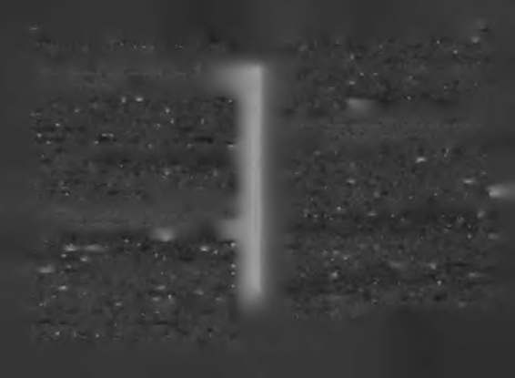

bağlıdır. Bu 4-A kuvveti, Akıl gücü, Ayak bağları, Atalet di
Nasıl ki uçak karadayken motoru tarafından ileri itiliyorsa,
renci ve Azim gücüdür. Buna kendi kanatlarıyla uçmanın 4-
azimle çalışmak da insanı öyle ilerletir. Kaynağını insan irade
A yasası diyebiliriz.
sinden alan azim gücünün en büyük rakibi, onu durdur
Dört kuvvetin çatışmasının sonucuna göre insan yüksemaya çalışan atalettir. Atalet, hareketsizlik demektir. Temlir ya da alçalır, yerinde sayar ya da geriye sürüklenir. Peki bellik, miskinlik, ertelemecilik, ağırkanlılık, üzerine ölü
bu dört kuvvet aynı anda nasıl çalışır? Aklın kanatlan insanı
toprağı serpilmiş gibi hareket etmektir.10 Atalet direnci
yukarı kaldırır ama ayak bağları aşağı çeker. Azmin gücü insanı
(tembellik) azimden fazla ise, kişi olduğu yerde kalır. Eğer
ileri iter ama atalet direnci geriye çeker. Birbirine muhalif bu
kişinin azminin gücü, ataletinin direncini yenerse o zaman
dört kuvvetten hangisi diğerine baskın gelirse, insan o yö

72
73
kişi ilerlemeye başlar. Peki ilerleyen her şey neden yükse-
lir. Doğru zamanı, doğru zemini ve uygun iklimi bulduğunlemez?
da hemen harekete geçip, "take-off" noktasına ulaşıp ayaklarını yerden kesemeyenler, bu üçlüden herhangi birindeki ani Ders-3: Hızlı yükselmek isteyenler azmine akıl
değişimden sonra fırsatı kaçırabilirler.
eklemelidir!
Bu yüzden, doğru zamanı, doğru zemini ve doğru iklimi
bulunca hemen "ayaklarını yerden kesecek" doğru bir hareket
Bazı insanlar azimle çok çalışır, çabalar ama yine de yükyapmak gerekir.
selip üst makamlara gelemez. Bu kişiler zamanla çalışmanın
gücüne inançlarını yitirip, "Bu ülkede çok çalışmakla bir ye
Ders-5: Yerde sürünürken başka, havada süzülürken
re gelinmiyor," demeye başlarlar. Bu durum bir otomobilin,
başka kurallara uymak gerekir!
uçak pistinde son sürat ilerlerken, sadece ilerleyip yüksele-
memesine benzer.
Uçak ayakları yerden kesilmeden önce pistte giderken
Sorun şudur: Azim ilerletir ama insanı yükselten akıldır!
otomobil gibidir. Havada kendi kimliğini bulur, kendi olur.
Azim, ileri iten motordur ama akıl insanı yükselten kanat
Karadayken ait olmadığı yerdedir, fil gibi hantaldır. Fakat
lardır. Azimli olduğu kadar akıllı da olan, azmine akıl ekle
"uygun zeminini (pisti) bulunca" birden hızlanır. Doğru zeyen bir kişi bu sorunu çözecektir.
minde, birden hızlanarak yükselmeye başlar. İnsanların ilk
yükselişleri de böyledir.
Ders-4: Kanadı açık halde ilerlerken en önemli nokta
Yükselişle beraber, uçağın tekerleri yerden kesilir ve artık ze
"take off" noktasını kaçırmamaktır.
mindeki kuralların dışında bazı kuralların izlenmesi gerekir. Bu,
başarılı olmak için kullanılan bazı yolların, başarılı kalmak
Başarılı bir kariyer yükselişi de bir uçağın kalkışı gibi üç şeye
için yetmemesine benzer. Zemin şartlarında geçerli olan yol
bağlıdır: Doğru zaman, elverişli zemin ve uygun iklim! Uçak doğlardan bazıları, zeminden yükseldikten sonra geçerli olmaru zemini (pist), doğru zamanı (hava trafiğinin durumu) ve doğru iklimi (yağış durumu) bulduktan sonra kanadı açık
maya başlar. Şartlar değişince, kurallar değişir. Uçağı yerden
halde hızla ilerlemeye başlar. Bu ilerleme uçuş için eyleme
havalandırmak için uyulması gereken kurallar ile havada uçurmak
geçme anıdır. Kalkışla beraber, tekeri yerde olmanın smırlayıcı-
için gerekenler farklılaşır. Aynı durum sosyal başarı için de gelıklarmdan kurtulur uçak.
çerli olduğundan, politikacılar seçilmeden önce ve seçildik
Uçağın tekerlerinin yerden kesildiği ana "take-off "anı deten sonra farklılaşırlar!
nir. İş dünyasında da "take- off" terimi, "ayakların yerden
kesildiği nokta", "kanatlanıp uçulan an" anlamında kullanı-
74